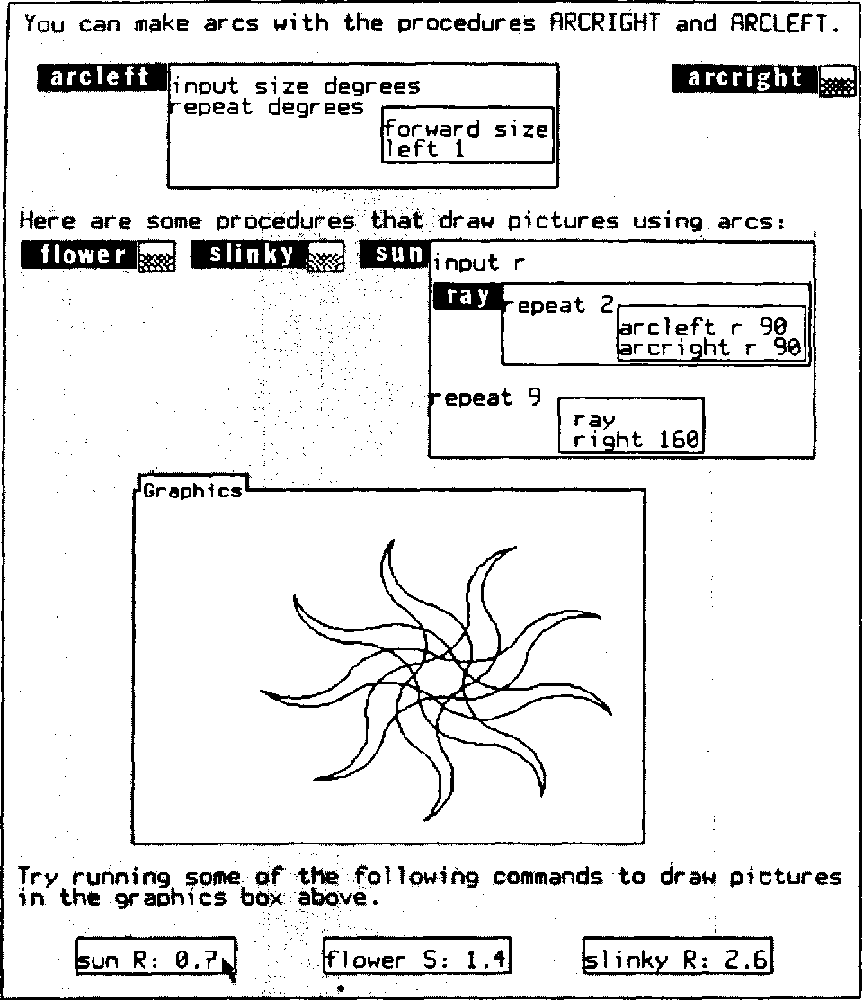

Document-oriented programming based on edit history
Tomas Petricek, Charles University, Prague

What I want?
A programming system that is
- Accessible and simple on first encounter
- But allows power-users to modify the system
- Can be used in local-first collaborative ways
- Open and can explain its working
Two ideas
Transparent document format
- Document with code and data
- Smalltalk image easier to navigate
- Also contain evaluation trace!
Program as a sequence of edits
- Can be replayed to get the document
- Makes merging documents easier
- Record and/or analyse past edits?
Demo: Conference planning

Demo
Add speaker & refactor list

Sample edits
Shared baseline with multiple sequences of edits added
Typical local-first workflow, with independent edits

Two ways
of merging
Do they result in equivalent documents?
Can we have a conflict that imposes order?
Formulas
Code as document elements
- Store formulas as trees (AST) in document
- Render in a (somewhat) nicer way
- Evaluation adds edits to the log!
- Beware interactions with edit merging

Code is data
Absolute selectors only for now
A selector
is a sequence of:
- Field name
- Index specifier
- All selector
Demo
Budget calculation & refactor list
Merging of formulas

Edit after formula add
- Formula exists in the document
-
Structure edit edits structure
and all references in the doc
Formula add after edit
-
Selectors in newly added edits
reconciled with all new non-baseline edits - Edit adds correct formula!
Evaluation
How it interacts with editing
- Evaluation adds edits that replace nodes!
- Same mechanism to reconcile edits as before
- But conflicting edit removes evaluated edit!
- Sometimes, they could adapt though...
Demo
Adding a speaker and evaluation
Conclusions
Possible future directions
Future directions
-
Formally show edits can always be merged?
Maybe, but probably only for a very small subset -
Projectional editing for nicer experience
Could editors written in the document itself? -
Rethinking abstraction and copy & paste
Abstract past edits, programming by demonstration -
Add user interactions, also as edits
How soon will this become unmaintainable?

Open positions in Prague
Postdoc and PhD funding available
Growing PL group
with more people starting soon
Email me to
learn more!
Conclusions
Two ideas for better programming systems!
- Document-oriented programming
- Programs as edit history
- Smalltalk ideal done differently?
Tomas Petricek, Charles University, Prague